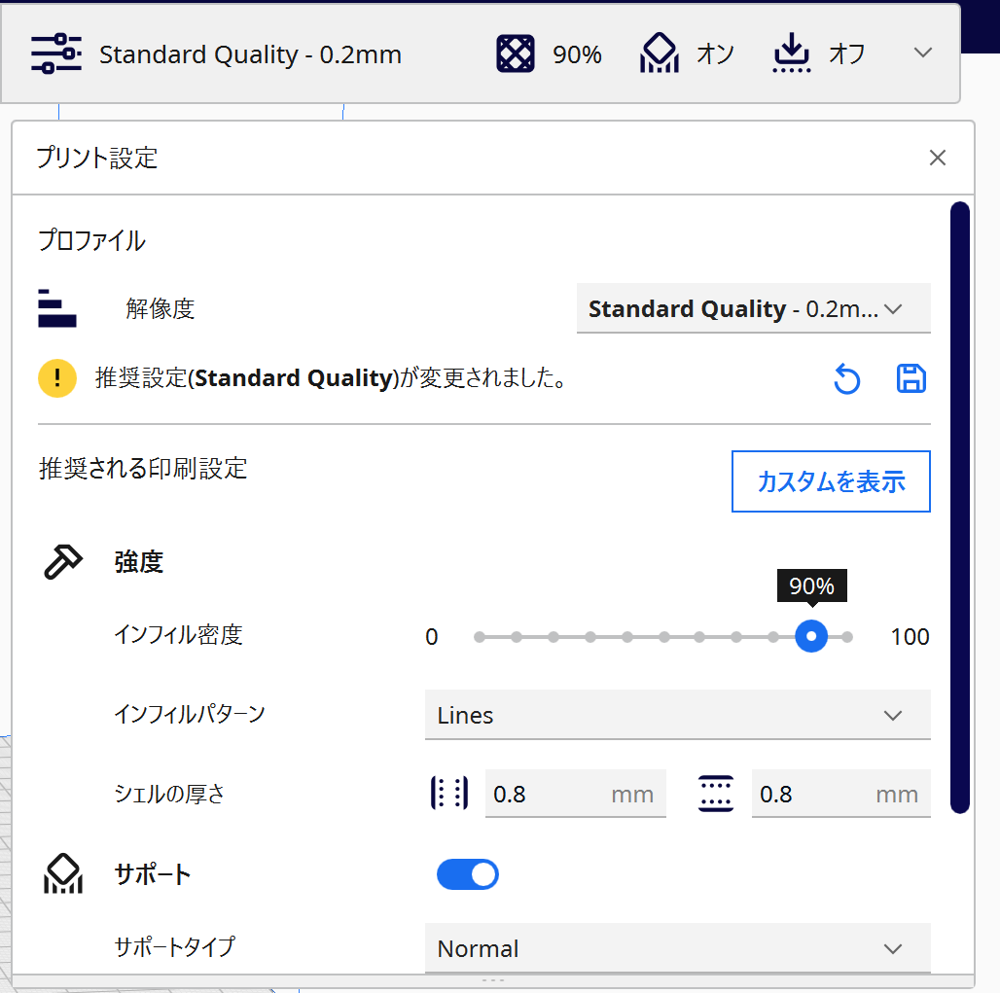
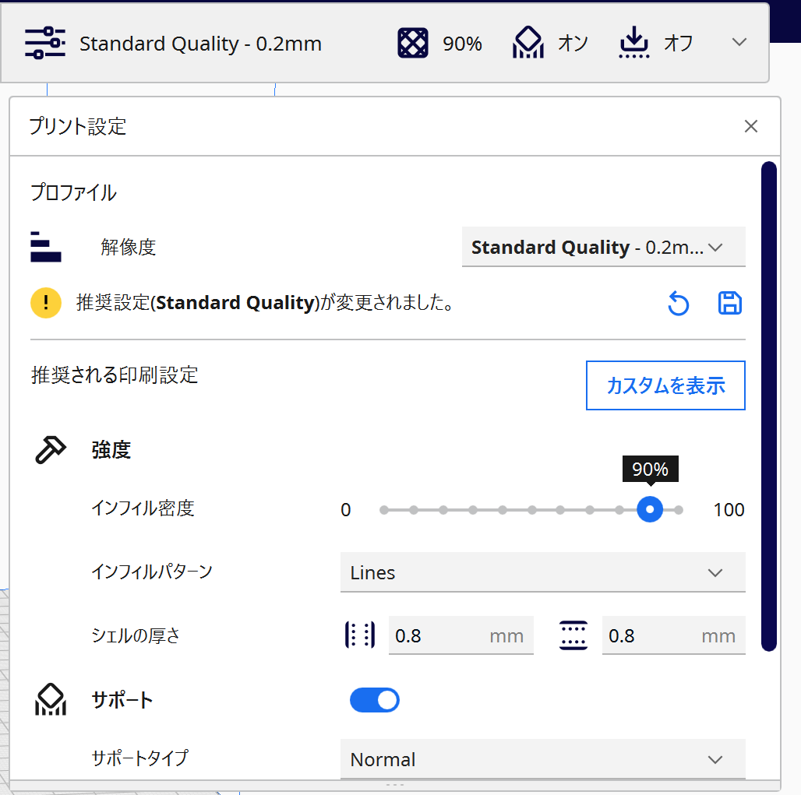

１．紹介動画
２．特徴・説明
３Dプリンターで作ったまな板置きです。
作った理由としては母がまな板置きを新調したがっていたため、
３Dプリンターで作ってみようと考えたことが発端です。
作った理由としては母がまな板置きを新調したがっていたため、
３Dプリンターで作ってみようと考えたことが発端です。
３．特徴
特徴として挙げられる点は分解できることです。
設置する場所にもよりますが、まな板置きそのものが調理場にでている場合
汚れてしまったり、濡れてしまったりしてしまう可能性があります。
そのため分解して簡単に洗えるようにしてしまえば、衛生面の不安が減るのではと考えました。
それ以外の点でも、支える部分を台形にすることで置くときは安定しながらとるときは角がぶつからないようにしたり
印刷時の内部の密度の設定をいじってできる限り折れたりしないようにしています。

インフェルミ密度の値を変えることで強度を変えることができる。
設置する場所にもよりますが、まな板置きそのものが調理場にでている場合
汚れてしまったり、濡れてしまったりしてしまう可能性があります。
そのため分解して簡単に洗えるようにしてしまえば、衛生面の不安が減るのではと考えました。
それ以外の点でも、支える部分を台形にすることで置くときは安定しながらとるときは角がぶつからないようにしたり
印刷時の内部の密度の設定をいじってできる限り折れたりしないようにしています。

インフェルミ密度の値を変えることで強度を変えることができる。
使用機材:3Dプリンター